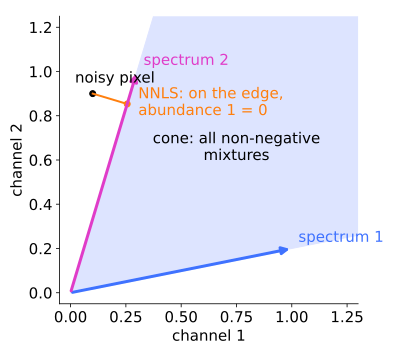
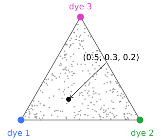
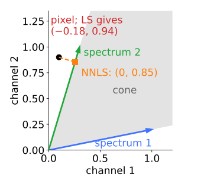
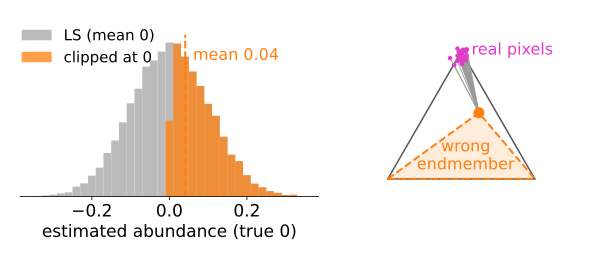
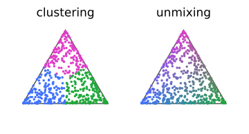
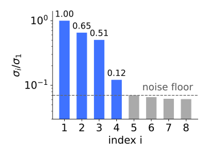
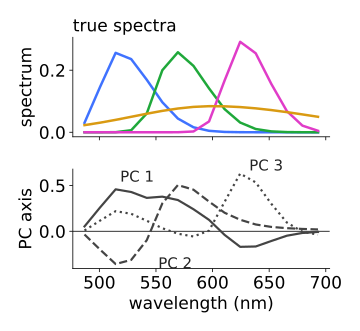
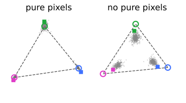
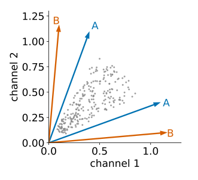

Least squares (last unit) needs the spectra in advance and allows negative abundances. Both problems have a picture: the pixels form a cloud in channel space, and every physically possible mixture lies in a cone.
Pixels as points; the cone, and the simplex after normalising.
Constraints: non-negative (NNLS) and sum to one, and what they cost.
How many components? The singular values of the pixels.
Finding the spectra: vertices of the simplex, and NMF, with its non-uniqueness.
Slides titled The math give the formulas and proofs; the ideas are complete without them.
Every pixel is a point in channel space (3 channels: a point in 3D).
One unit of dye k lands at its spectrum \mathbf m_k. Mixtures a_1\mathbf m_1 + a_2\mathbf m_2 + \dots with non-negative amounts fill the cone spanned by the spectra.
Pure pixels lie on the cone’s edges; dim pixels near the origin; mixtures inside.
Without noise, every pixel is inside the cone. The cone is the set of physically possible pixels.

Normalise: the cone becomes a simplex
Divide every pixel by its total (sum over channels): brightness disappears, only the colour of the spectrum remains.
Every ray of the cone becomes one point: the cone becomes a simplex, a triangle for three components (a segment for two, a tetrahedron for four).
A mixture lies inside the triangle; its position gives the fractions of the components (barycentric coordinates).
Same picture as the chromaticity diagram of the colour day (from a spectrum to three numbers): mixtures of two lights lie on the straight line between them.

The math: cone and simplex
\text{cone}(M) = \{M\mathbf a : \mathbf a \ge 0\}, \qquad \text{simplex} = \{M\mathbf a : \mathbf a \ge 0,\ \textstyle\sum_k a_k = 1\}.
If every column is scaled to sum 1 (fractions of the light), then \sum_c (M\mathbf a)_c = \sum_k a_k: normalising a pixel by its total is the same as asking the abundances to sum to one.
Barycentric coordinates: for vertices \mathbf e_1, \mathbf e_2, \mathbf e_3 and a point \mathbf p in the triangle, solve \sum_k a_k \mathbf e_k = \mathbf p, \sum_k a_k = 1.
Try it: the cloud, the cone and the triangle
Noise pushes pixels outside: NNLS
A dim pixel with noise can land outside the cone. Unconstrained least squares then reports a negative abundance.
Two channels, spectra (1, 0.2) and (0.3, 1), pixel (0.1, 0.9), just outside: LS gives (-0.18,\ 0.94).
NNLS (non-negative least squares) takes the closest point in the cone. Here it lies on the edge of spectrum 2: (0,\ 0.85).
The projection lands on a face or an edge; the components “behind” it get exactly zero. The active-set method (Lawson & Hanson) guesses which components are zero, solves least squares for the rest, and repairs the guess until no component wants to go negative or come back.

The math: NNLS and its optimality conditions
\min_{\mathbf a}\ \|\mathbf y - M\mathbf a\|^2 \quad\text{subject to}\quad \mathbf a \ge 0 .
A convex quadratic programme. With \mathbf w = M^\top(\mathbf y - M\mathbf a) (minus half the gradient), \hat{\mathbf a} is optimal if and only if (KKT):
\hat a_k \ge 0, \qquad w_k \le 0, \qquad \hat a_k\, w_k = 0 \quad\text{for every } k.
A component in use (\hat a_k > 0) has zero gradient; a component at zero (\hat a_k = 0) would make the error worse if increased (w_k \le 0).
Example above: \hat{\mathbf a} = (0, 0.853), \mathbf w = (-0.147,\ 0). Both conditions hold.
Sum to one, and the price of constraints
Fully constrained least squares: non-negative and summing to one: the closest point in the simplex (for normalised pixels, or fractions).
Honest costs: in dim regions the noise is clipped at zero from below but not from above: a positive bias (the mean of a clipped noisy zero is above zero).
A wrong endmember puts real pixels outside the simplex, and the constraint projects them back in silence: the error moves into the residual, not into a negative abundance. Always look at the residual.

The math: the sum-to-one constraint
Without the sign constraint, minimise \|\mathbf y - M\mathbf a\|^2 subject to \mathbf 1^\top\mathbf a = 1 with a Lagrange multiplier:
Both constraints together (Heinz & Chang): add a row \delta(1, \dots, 1) to M and the value \delta to \mathbf y, with \delta large, and solve NNLS. The extra row is an “equation” that must hold almost exactly.
What unmixing is not
Clustering (k-means on pixel colours, the colour day; Gaussian mixtures): each pixel belongs to one class. Unmixing: each pixel is a mixture, how much of each. Different questions about the same cloud.
Non-linear mixing: quenching, energy transfer (FRET), absorption inside the sample, saturated pixels: the cloud bends and straight edges no longer fit.
Neighbouring pixels have similar abundances: a spatial prior (a smoothness term, as in the Ising/MRF day) can stabilise noisy maps. Not covered here.

How many components?
Best case: reference spectra from single-stained controls (the crosstalk unit). Often not possible: spectra shift inside cells, autofluorescence is unknown, a remote-sensing scene’s materials are unknown.
First question: how many components? Stack the pixels as the columns of Y (channels × pixels) and take its singular values (PCA without centring, recall the PCA unit of day 1).
K components without noise: exactly K non-zero singular values. With noise: K stand out above a floor.
The day’s cell, 16 channels, 4 components: \sigma_i/\sigma_1 = 1,\ 0.65,\ 0.51,\ 0.12,\ 0.070,\ 0.066, \dots: four above the floor (the fourth, the dim autofluorescence, only just).

PCA axes are not spectra
The principal axes are orthogonal and have negative entries; spectra are neither.
A triangle-shaped cloud: its principal axes point along its spread, its corners point at the pure components. Only the corners are spectra.
PCA tells you how many and the subspace (the plane of the triangle); finding the spectra needs more: the corners, or non-negativity.

Pure pixels: the vertices are the spectra
If some pixels contain only one component, they are the corners (vertices) of the normalised cloud.
Vertex finding (the idea behind VCA): take the most extreme pixel, project it out, repeat. Each step finds one corner.
N-FINDR: the K pixels that span the simplex of largest volume.
No pure pixels: the cloud’s corners lie inside the true simplex, and vertex methods undershoot: found spectra are mixtures. In the demo: 3–5° from the true spectra with pure pixels, 7–11° without.
Macenko’s stain estimate (next unit) is the two-component case.

The math: volume and the best rank-K approximation
Simplex volume: for K vertices \mathbf e_k in K-1 dimensions, V = \frac{1}{(K-1)!}\left|\det\begin{pmatrix} 1 & \cdots & 1 \\ \mathbf e_1 & \cdots & \mathbf e_K \end{pmatrix}\right|. N-FINDR swaps pixels in and out to maximise it.
Eckart–Young: the truncated SVD U_K\Sigma_K V_K^\top is the best rank-K approximation of Y in the Frobenius norm. Projecting the pixels onto the first K left singular vectors removes the noise outside the signal space before looking for vertices.
Try it: finding the spectra
NMF: factorise without pure pixels
Non-negative matrix factorisation: Y \approx WH with bothW (spectra, channels × K) and H (abundances, K × pixels) non-negative.
Start from a seeded positive guess; alternately improve H and W with multiplicative updates. The error never increases.
Not unique: any cone that contains all the data and lies inside the positive orthant fits equally well. Without pure pixels, two seeds give two answers with the same error (demo: 3.195 and 3.201, the true spectra give 3.199; seed 1 lands 4.5°, 3.2°, 9.1° from the true spectra, seed 2 10.2°, 7.4°, 8.9°).
Remedies: pure pixels, smallest volume, sparse abundances, known spectra. Even with three of four spectra known, a broad fourth one is found only up to “minus a bit of the known ones” (dips at their peaks).

The math: the NMF updates
Minimise \|Y - WH\|_F^2 over W, H \ge 0. Lee & Seung’s multiplicative updates (element-wise \odot, \oslash):
H \leftarrow H \odot (W^\top Y) \oslash (W^\top W H), \qquad W \leftarrow W \odot (Y H^\top) \oslash (W H H^\top).
Gradient descent with a step chosen per entry, \eta = H \oslash (W^\top W H): non-negative stays non-negative, and the error never increases.
Non-uniqueness: WH = (WR^{-1})(RH) for any invertible R that keeps both factors non-negative (scalings and permutations always do; others sometimes).
With Poisson noise, the Kullback–Leibler version of NMF is the maximum-likelihood estimate (pointer).
Validation without ground truth
The residual at the noise level everywhere (unit 2).
Non-negativity: abundances clearly below zero mean the model or the spectra are wrong.
Agreement with a control: a found spectrum should match a single-stained control where one exists.
Stability: the same answer from different seeds, subsets of the image, or neighbouring numbers of components.
Summary
Pixels form a cloud; without noise it lies in the cone of the spectra; normalised, in their simplex.
Noise pushes dim pixels outside: LS goes negative; NNLS projects onto the cone (components behind the face get zero); fully constrained onto the simplex. Costs: a positive bias, and wrong endmembers hidden in the residual.
How many components: singular values above the noise floor. PCA axes are not spectra.
Pure pixels: spectra = vertices (vertex finding, largest simplex). No pure pixels: vertex methods undershoot.
NMF needs no pure pixels but is not unique; constrain it, and validate with residual, signs and controls.